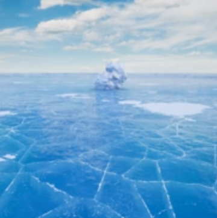
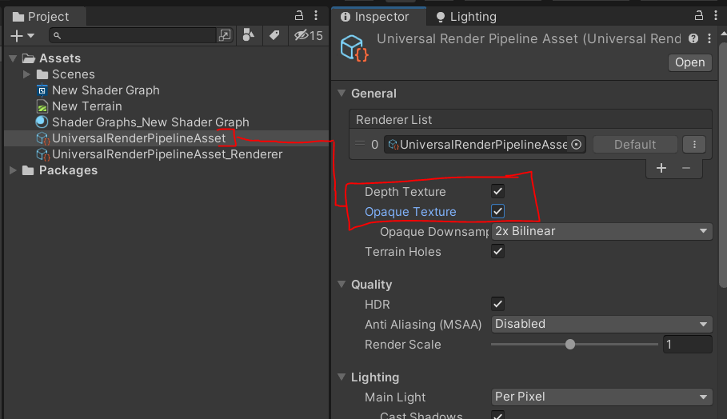
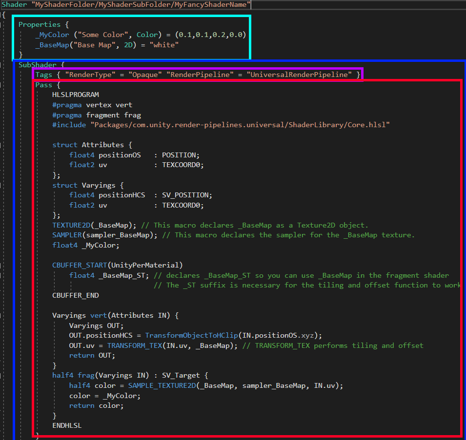
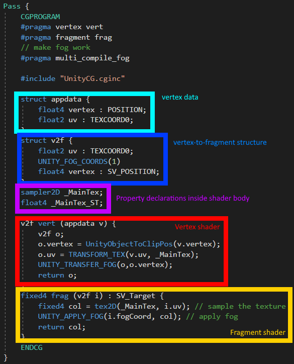
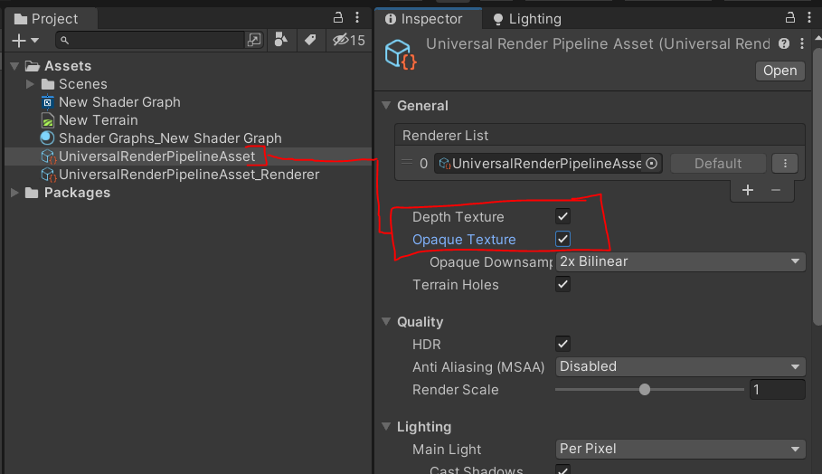

Cette page est incomplète, et en principe les informations importantes sont ajoutées au fur et à mesure.
Les infos sur cette page sont à destination à la fois du cours de prog graphique des game progs et de math1 des game artists.
La priorité c'est d'écrire les sections utiles pour vos projets de construction de shaders pour l'examen, donc :
-les bases du workflow de production de shaders :
-ShaderGraph
-ShaderLab
-les exemples qu'on a vu :
-textures
-luminosité
-animation
-transparence
-éclairage direct
//-outlines
//-dithering
//-eau
-comment faire une vidéo
La version actuelle des cours se passe sur 2021.1.
On travaille avec URP.
Le rendu et les shaders, définitions
Le rendu consiste à obtenir l'image d'une scène du point de vue d'une caméra.
Mais on peut aussi faire le rendu d'objets individuels.
Les images sont des grilles de pixels, où chaque pixel a une valeur exprimée en rgb.
Le rendu est effectué par une série de calculs à partir des données de notre scène.
Cette série d'étapes de calculs c'est ce qu'on appelle le pipeline graphique.
Scènes et objets
-Pour simplifier, on suppose généralement qu'une scène est une liste d'objets visibles,
et que les objets sont des listes de triangles.
-À leur tour les triangles sont un trio de vertices qui ont des propriétés:
-position
-normale
-UVs
-tangente
-vertex color
Render loop
Pour faire le rendu d'une scène en temps réel, typiquement on calcule plusieurs images par seconde, typiquement 60 par seconde,
mais ça dépend de la fréquence d'affichage de l'écran, on a souvent 120fps de nos jours par exemple.
-(Le cycle de raffraichissement de l'écran)
60 fois par seconde, notre moteur graphique va calculer une image constituée de pixels, et envoyer ça à l'écran pour l'afficher.
En fait, en mémoire, l'image est une liste avec des valeurs numériques pour les couleurs tous les pixels de l'image.
Cette liste doit être remplie avec ces valeurs de couleurs, et une fois que la liste est remplie, on peut l'envoyer à l'écran par le câble depuis la carte graphique.
Sauf que si le rendu prend trop longtemps,
le temps qu'il faut pour calculer chaque image peut prendre plus longtemps que l'intervalle de temps disponible avant l'affichage par l'écran de l'image suivante, et on affiche des images moins souvent que 60 fois par seconde.
Et là on a deux possibilités:
-Soit avoir de la synchro verticale (VSync),
ce qui veut dire attendre qu'une image soit finie avant de l'afficher à l'écran, ce qui veut dire garder l'image précédente à l'écran en attendant que la nouvelle arrive.
-Soit ne pas avoir de vsync,
ce qui veut dire envoyer l'image actuellement entre train d'être rendue même si elle est incomplète,
ce qui permet d'avoir au moins la moitié de l'image mise à jour, mais ça crée un artefact graphique appelé une "tear line" (ligne de déchirure) typiquement horizontale au milieu de l'écran.
En fait en interne, quand on est en train de faire le rendu d'une image, la liste des valeurs des pixels part dans une zone mémoire appelée le back buffer,
et l'image qui est actuellement affichée à l'écran est stockée dans une zone appelée le front buffer au cas où on a besoin de l'envoyer à l'écran plusieurs fois.
Et ce qui se passe quand on affiche une nouvelle image à l'écran, c'est qu'on inverse le front et le back buffer,
c'est à dire qu'en fait on a deux zones mémoires A et B qui sont utilisées en alternance pour stocker l'image en cours de rendu, et l'image en cours d'affichage.
-Draw calls
Ce qui est envoyé dans le pipeline de rendu c'est typiquement une liste de vertices, qui vont constituer nos triangles.
Ils peuvent aussi consistuer d'autres types de primitives, comme des lignes, des éventails de triangles, mais on va pas s'y intéresser.
Ces vertices sont donnés au pipeline avec leurs propriétés (position dans la scène, UVs, normales, etc.).
À chaque fois qu'on envoie des vertices dans le pipeline, ça s'appelle un draw call, parce qu'en interne, le moteur appelle la fonction Draw(), qui prend nos vertices et les passe à la carte graphique.
-Batching
Pour des raisons de performance, on a tendance à grouper les vertices qui ont le même material, pour les envoyer dans le pipeline en même temps, même si ces vertices appartiennent à des meshs différents.
On appelle ça le batching ("batch" veut dire "fournée" en anglais, comme faire des cookies au four).
Ça permet de réduire le nombre de draw calls.
Ça améliore les performances parce qu'à chaque draw call il faut reconfigurer le pipeline en chargeant un nouveau shader, des nouvelles textures, changer divers paramètres de rendus, entre autres.
-(Forward Rendering vs Deferred Rendering)
C'est bon de savoir de quoi il retourne quand on parle des méthodes de forward et de deferred rendering,
parce que parfois on a des problèmes qui sont causés par ces méthodes,
mais c'est pas le plus prioritaire non plus donc vous pouvez ignorer si vous êtes fatigué.es.
Je vais brutalement simplifier l'explication, mais donc :
La méthode naïve pour organiser le rendu des objets,
c'est de faire le rendu des objets un par un,
et pour chaque objet, de prendre les contributions de chaque lumière, une par une,
ce qui fait par exemple, que pour 30 objets et 30 lumières, on a 30x30 == 900 "étapes de rendu".
C'est ce qu'on appelle le Forward Rendering.
Il existe une façon d'accélérer le rendu, appelé le Deferred Rendering (rendu différé, où on diffère l'application des lumières jusqu'à la fin du processus de rendu),
où on commence en fait par "fusionner" tous les objets de la scène en 1 objet qui couvre tout l'écran.
Cette fusion prend la forme d'un pré-rendu de la scène, stocké dans une texture appelée un G-buffer.
Et une fois les objets fusionnés en 1, quand on veut appliquer les lumières,
on a plus que 1x30 == 30 "étapes de rendu", vu que les lumières s'appliquent à 1 seul objet.
En fait on a 30+30 == 60 étapes de rendu parce que la fusion nécessite de faire le tour de tous les objets au départ, mais 60 c'est beaucoup plus rapide que 900 en tout cas.
Cependant, le deferred rendering ne permet pas de bien gérer les objets transparents (pas aussi faciles à fusionner),
donc ceux-là sont toujours rendus avec la logique du forward rendering.
Ça complexifie aussi l'anti-aliasing, et d'autres détails.
Pipelines fixes vs programmables
Anciennement, les pipelines étaient configurables, mais pas programmables, et donc on avait pas beaucoup de flexibilité dans le déroulement du rendu.
De nos jours on a l'option d'insérer des scripts dans le pipeline de rendu pour contrôler certaines étapes.
La dernière console à avoir un pipeline fixe était la Wii (2006).
Ces scripts qui permettent de contrôler le rendu de nos objets, on appelle ça des shaders.
Shaders
Les shaders permettent typiquement contrôler la forme des objets, leur éclairage, couleur et transparence. Vertex par vertex, mais aussi pixel par pixel.
-familles de shaders
On peut regrouper les shaders courants en plusieurs familles:
-shaders de debug
On a parfois besoin d'afficher les données de nos objets pour les vérifier (positions, vecteurs, UVs, résultats de calculs intermédiaires, etc.), et on peut parfois les afficher sous forme de couleur par exemple.
Ces shaders servent surtout pendant le dev, et pas dans le build final.
-shaders "réalistes" old-school/retro (donc par si réalistes que ça de nos jours).
-shaders réalistes modernes, qui suivent le principe du Physically-Based Rendering (PBR)
On a pas tellement besoin d'apprendre à en faire nous-mêmes de cette catégorie,
c'est à ça que sert le shader de material standard de unity.
-shaders non-réalistes, souvent stylisés, cartoon, dits NPR (Non-Photo-Realistic)
-autres shaders, souvent pour des effets particuliers.
-Materials
Si un shader est un script qui sert à contrôler le rendu d'un material,
alors le material fait faire le rendu par le shader, en lui disant quelles valeurs utiliser.
Les materials eux-mêmes contiennent donc 2 informations:
-quel shader le material utilise pour être rendu
-une liste de valeurs de paramètres à donner à ce shader pour le rendu
Exemple:
un champ de force peut avoir un look calculé par un shader,
mais on peut avoir plusieurs variantes de champ de force, avec des propriétés différentes:
-l'un peut être bleu
-un autre rouge avec des textures différentes
-un autre noir avec des options supplémentaires
et ces trois variantes peuvent être trois materials différents,
qui utilisent tous le même shader de champ de force,
mais chacun aura des valeurs différentes pour la couleur, les textures, etc.
-Exemples d'applications courantes
Nature et magie élémentaires :
Feu, flammes, explosions, lave, lumière
Eau, bulles, caustiques, cascades, acide
Vent et fantômes, fumée, magie ombre
Glace, neige

Électricité, éclairs
Herbe
Cristaux et roches, sable
Science & Fiction :
Champs de force
Portails, Téléporteurs
Hologrammes et invisibilité
Lasers
Désintégration
Styles :
Cel-shading et cartoon
Contours
Dithering & pixel-art auto
Filtres : palettes couleur, négatifs, etc.
Catégories spéciales :
Effets volumétriques (light shafts, fumée, brouillard, nuages, ...)
Intégration (traces dans le sable ou la neige, flammes enveloppantes, éclairs)
Particules
Rendu multi-passe (voir au travers des murs, contours doux, ...)
Post-processing (profondeur de champ, bloom, tone-mapping, ...)
-Vertex properties
-position
-normales
-tangentes
-UVs
-vertex color
-...
-(Gestion de topologie - Hull shaders / Domain shaders / Geometry shaders)
-Vertex shading
-Projection
-Espaces / repères 3D
-ex: Héliocentrisme vs Géocentrisme
-Origines
-Axes
-Conventions
-Y vertical vs Z vertical
-Profondeur avec Z+ ou Z-
-Handedness / repères main-gauche vs main-droite
-Object Space
-Origine/Pivot vs Centre
-Objet vs Géométrie
-Parenting
-World Space
-View Space
-Clip Space
-Camera
-Planes
-Near
-Far
-Left, Right, Top, Bottom
-Types de projection
-Perspective
-Orthographique
-Autres
-...
-Projection
-Théorème de Thalès
-Matrices (cf plus loin)
-Screen Space
en fait la projection entre clip et screen space est faite pendant la rasterization
-Transforms
-Ré-exprimer un vecteur dans un autre repère
-Appliquer des transforms
-Translation
-Rotation
-Scaling
-(Shearing)
-Projection
-Matrices
-Signification et Construction
-Dans notre case, on liste les vecteurs qui sont les axes d'un espace
-Multiplication
-Aide visuelle
-Opérations
-Piège avec l'ordre des termes
-Avoir le même nombre de colonnes à gauche que de lignes à droite
-Matrices de transformation
-Piège de la contravariance
-Inverser des matrices
-Résolution d'équations
-Manuellement
-Inverser la translation
-Transposer la rotation
-Transposer des matrices
-Vecteurs position vs Vecteurs direction
-Coordonnées Homogènes W
-Rasterization
-Clip space -> Screen space
-test d'inclusion de pixel dans un triangle
-coordonnées barycentriques
-calcul d'aires de sous-triangles
-cross product / produit vectoriel
-détection d'aires "négatives"
-interpolation barycentrique de propriétés de vertices pour chaque fragment de la surface d'un triangle
-Fragment shading
-Couleur
-Textures
-Lumière
-Transparence
-Textures
-Type de shader (Opaque, Opaque avec AlphaClip, Transparent)
-Type de blending (Alpha blend, Additif, Multiplication, ...)
-Propriétés PBR
-Smoothness/Roughness
-Metalness
-Emission
-Tri
-Depth Testing
-Merging
-combinaison des fragments pour obtenir la couleur finale des pixels
ShaderGraph
La construction de shaders, c’est le cas d'usage principal des maths et de la logique en game art,
c'est pourquoi le cours de maths de game art se concentre sur l'apprentissage de shadergraph.
Installation
Pour avoir un projet unity avec shadergraph installé dedans, on a deux options :
soit 1) Création de projet Unity avec le template URP, normalement ça setup tout correctement par défaut
soit 2) Installer à la main
-Package manager accessible via Window > Package Manager
-Les packages sont pas tous listés au même endroit, vérifier dans Unity Registry
-Installer:
-Core RP Library
-Universal RP
-Shader Graph
-Asset de pipeline
-Créer via Assets > Create > Rendering > Universal Render Pipeline > Pipeline Asset
-Donner au projet via Edit > Project Setting > Graphics > le premier champ
-Setup la Opaque Texture et la Depth Texture
-sur le Pipeline Asset, cocher Depth Texture et Opaque Texture

-ça sera nécessaire pour faire fonctionner les nodes Scene Color et Scene Depth, mais aussi pour faire fonctionner
sampler2D _CameraOpaqueTexture;
sampler2D _CameraDepthTexture;
-Dans un projet à template URP, on a un Pipeline Asset déjà créé, il s'appelle UniversalRP-HighQuality
-Update les materials
-si tout est rose après avoir mis le nouveau pipeline, c'est normal, il faut changer les matériaux pour qu'ils utilisent des shaders compatibles avec le pipeline choisi
-l'option est dans Edit > Render Pipeline > Universal Render Pipeline > Upgrade Project Materials to UniversalRP Materials
-sinon manuellement créer des nouveaux materials pour les différents objets et les ré-attribuer à la main sur les gameobjects.
+Créer une nouvelle scène vide et travailler dedans
-des fois la scène par défaut peut interférer avec ce qu'on fait
Workflow de création de shader
-Créer Asset > Shader > Universal Render Pipeline > Unlit Shader Graph
-Ouvrir le shader avec un double clic sur l'asset
-Faire des modifs dans le shader
-Save Asset
-en haut à gauche de la fenêtre de shadergraph
-Créer un Material
-Soit séparement via Assets > Create > Material
-puis drag l'asset shader sur l'asset material
-(Soit en créant à partir de clic droit sur l'asset shader)
-Placer le material sur un game object
-avec un drag and drop ça marche
-Cocher Always Refresh pour les shaders animés
Interface
-Naviguer à la souris
-clic molette pour déplacer la vue
-Main Preview
-clic droit dessus pour choisir sur quel mesh prévisualiser le shader
-Ça casse facilement, certains shaders pourront pas être prévisualisés correctement
-le look du shader qui compte vraiment c'est celui dans la scène.
-Master Stack (anciennement master node)
La master stack contient une liste de champs de propriétés qui décrivent le look du material auquel est appliqué le shader, pour chaque point à la surface des objets qui ont ce material.
Le shader aura des nodes qui feront des calculs, et les résultats finaux de ces calculs seront raccordés à ces champs via des cables.
Il y a deux types de "points" à la surface des objets: les vertices, qui sont les sommets du mesh de l'objet, et les fragments, qui sont plus ou moins les pixels de l'objet visibles à l'écran.
-Section Vertex
La section Vertex de la master stack permet en gros de déplacer les vertices du mesh pour le déformer, et d'ajuster les normales et les tangentes pour les garder cohérentes avec la déformation.
-Section Fragment
La section Fragment de la master stack permet de définir la couleur, transparence et l'éclairage pour chaque pixel visible de notre objet.
Comme on en est qu'à l'introduction du cours, pour l'instant on va juste dire que le champ Base Color permet de choisir la couleur de base du material. Les autres champs seront expliqués au cours des exemples plus loin.
Si on met rien dans ces champs, des valeurs par défaut seront utilisées.
-Graph Inspector
Le graph inspector permet de régler des paramètres importants du shadergraph.
On peut pour l'instant ignorer l'onglet "node settings" en haut,
et aussi ignorer les champs Precision et Target Settings.
Les paramètres importants sont dans la section en dessous intitulée "Universal":
-le champ Material permet de décider si le shader subit l'éclairage (Lit) ou non (Unlit).
-le champ workflow permet de choisir entre le mode moderne PBR Metallic,
ou l'ancien mode Specular qui permet de contrôler la couleur des réflexions séparément.
-le champ Surface permet de décider si le shader est de type Opaque ou Transparent.
-choisir l'option Transparent ajoute un champ Alpha à la master stack pour contrôler l'opacité
-certains nodes ne fonctionneront qu'en mode Transparent (Scene Color par exemple).
-la checkbox Alpha Clip nous permet de faire un shader de cut-out, même si le shader est en mode Opaque
-cocher cette option ajoute un champ Alpha et Alpha Clip Threshold à la master stack
-ce Alpha Clip Threshold (seuil de découpage alpha) permet de
rendre tous les pixels avec une opacité sous ce seuil totalement transparents
-la checkbox Two-Sided permet de faire render les faces arrières ou internes (backfaces) des meshs
-les autres options sont ignorables pour l'instant
-Blackboard & properties externes
//todo
-Valeurs par défaut
//todo
-Piège de priorité
//todo
-Name vs Reference
//todo
//todo
-Ports et cables
//todo
-nombre de cases
//todo
-Vecteurs XYZ, RGB
//todo
-Créer des nodes
-Espace
-Clic droit > Create node
Le pipeline dit "built-in" (BIRP) est celui par défaut qu'on a quand on crée un projet vierge avec aucun template, ou un template 3D basique.
Unity propose aussi le système de Scriptable Render Pipeline (SRP), qui permet d'utiliser un moteur de rendu fait maison ;
et ils mettent à disposition deux moteurs pré-construits :
-Universal Render Pipeline - URP ; anciennement nommé LightWeight RP, LWRP
-High Definition Render Pipeline - HDRP (qu'on va ignorer)
Le choix de render pipeline impacte notre workflow :
-les SRP nous permettent d'utiliser ShaderGraph
-URP fonctionne sur mobile
-ça change quelles features graphiques sont disponibles mais on va pas s'en soucier
-ça impacte le format des fichiers de shader script qu'on va utiliser
On peut comparer les deux templates de shader "vides" par défaut entre BIRP, et URP :
cf la section suivante pour les obtenir.
II) Créer et appliquer un shader
Dans le BIRP, pour créer un shader script, on peut passer par Assets > Create > Shader > Unlit Shader, ou Standard Surface Shader
Dans URP, pour créer un shader script, on a pas d'option dans l'interface, on a que des options pour créer des graphs :
La doc de unity indique qu'on devrait utiliser shadergraph (??) :
sauf que non, on peut tout à fait écrire des shader scripts,
il faut juste aller chercher un template de shader dans la doc :
https://docs.unity3d.com/Packages/com.unity.render-pipelines.universal@8.2/manual/writing-shaders-urp-unlit-texture.html
(Apparemment on est plusieurs à trouver ça aberrant, donc quelqu'un a écrit un pti plugin pour ajouter un bouton create dans l'UI :
https://github.com/KageKirin/CreateURPShaders)
Après, ce template de code, il faut le copier-coller dans un fichier existant.
Vous pouvez écraser le contenu d'un shader BIRP, ou sinon créer un fichier .txt dans l'explorer de fichiers, et le renomer en .shader
Aussi, techniquement, les shaders BIRP fonctionnent dans URP si ils sont basiques :
Et ils coincent quand on veut interagir avec le système d'éclairage (magenta == cassé, mais cf l'ombre portée) :
Pour compiler les shaders, typiquement, on a juste besoin de revenir dans Unity, et ça compile auto très rapidement.
Ça recompile même pendant que le jeu tourne, donc c'est pratique pour itérer.
Dans d'autres moteurs, par exemple du fait-main en C++, il faut faire compiler les shaders au runtime en passant le contenu des fichiers shader en tant que string à une fonction de compilation.
Par contre si y'a des erreurs, il faut faire attention, elles se comportent différemment dans la console :
-les erreurs sont pas bloquantes pour lancer le jeu
-mais si vous faites clear et que les erreurs de shader disparaissent de la console, en fait elles sont toujours là
-pour voir les erreur de shader disparues, vous pouvez faire un changement dans le shader pour forcer à recompiler
Ensuite pour appliquer les shaders sur les Materials :
-Créer un material
-Le shader est applicable en faisant un drag'n'drop de l'asset shader sur l'asset material
-Sinon on peut choisir le shader dans le menu dépliant dans l'Inspector du material (j'explique le rangement des shaders plus loin) :
Et finalement, pour appliquer le material sur un GameObject :
-Vous pouvez faire un drag'n'drop du material sur le GameObject
-Ou un drag'n'drop du material dans le champ material du Mesh Renderer dans l'inspector du GameObject :
Voilà le setup, on a un shader sur un material sur un GameObject dans notre scène.
Ensuite concrètement on passe plus de temps à écrire des shaders qu'à les créer/placer, donc allons voir comment faire ça.
III) Structure des fichiers
a) ShaderLab vs HLSL
On travaille avec URP, à partir du template de shader "vide" donné par la doc plus haut.
Je vous remets le lien :
https://docs.unity3d.com/Packages/com.unity.render-pipelines.universal@8.2/manual/writing-shaders-urp-unlit-texture.html
Le langage de programmation utilisé pour écrire des shaders dans Unity, c'est typiquement le HLSL.
Par contre on a une sur-couche spécifique à Unity autour du HLSL, qu'on appelle ShaderLab.
On peut voir la distinction entre ces deux parties :
Les tags HLSLPROGRAM et ENDHLSL délimitent la partie HLSL du code.
(Dans BIRP, c'est des tags CGPROGRAM, mais c'est du HLSL aussi en fait.)
La partie HLSL est assez classique et comparable à ce qu'on aurait dans des shaders utilisés dans d'autres moteurs.
Ce qu'on a autour de ça c'est ShaderLab, qui s'occupe des Properties, Subshaders, Tags et Passes.
b) structure shaderlab

Les parties spécifiques au format ShaderLab sont donc:
-Nom et dossier du shader
cf plus loin
-Properties
cf plus loin
-Subshaders
-on va pas en parler, mais pour simplifier, on va dire que ça sert à écrire des variantes du shader compatibles avec différentes plateformes
-Tags
cf plus loin
-Passes
-on va aussi les ignorer, mais ça sert à faire render le shader différemment dans différents contextes particuliers,
par exemple lors des calculs de shadowmapping, ou des rendus intermédiaires depth-only, etc.
c) Nom et dossier
La ligne tout en haut du shader nous permet de donner un nom au shader, et de le catégoriser dans un dossier :
Le dossier dans lequel on le range est pertinent pour le menu dépliant dans l'inspector :
d) Properties
shader vs material properties
Ensuite on a les Properties, qui nous laissent définir des valeurs qu'on peut alimenter depuis l'extérieur du shader.
Ici on a une déclaration de property texture :
Elles sont typiquement alimentées depuis l'éditeur, par les users, via le material :
Alors, il y a un piège, et un point à bien comprendre ici ^ ...
Il faut faire la distinction entre :
-les valeurs de properties dans le shader
-les valeurs de properties sur le material
En fait, les valeurs de properties choisies dans le code du shader sont seulement des valeurs par défaut, qui s'appliquent au material à sa création.
Mais une fois que le material a été créé, il a ses propres valeurs de properties, et ce sont celles-ci qui comptent.
Au cas où la distinction entre material et shader est pas claire :
-le shader c'est un script qui décrit la logique du rendu
-le material utilise un shader pour être rendu, et il contient une liste de valeurs de properties à donner au shader au moment de se faire render
Par exemple, on peut avoir :
-un shader de rendu de cheveux, qui peut contenir une logique assez technique
-50 materials de cheveux qui utilisent tous ce même shader, mais avec plein de couleurs différentes, c'est à dire des valeurs de Property "color" différentes
(En vrai en pratique on utiliserait des MaterialPropertyBlocks pour avoir 1 seul material, et ça ferait juste varier la couleur pour chaque objet, mais passons.)
déclarations hlsl
En fait pour utiliser des Properties dans notre shader, il faut aussi que la partie HLSL ait une déclaration des properties en tant que variables :
Ici on a notre property texture "_BaseMap" déclarée à la fois tout en haut en tant que Property ShaderLab,
(cf la doc pour comprendre la syntaxe mais en gros c'est nom_pour_le_code("nom_pour_les_users", Type) = "valeur_par_défaut")
et ensuite au milieu en tant que variable HLSL, avec une syntaxe un peu compliquée :
La syntaxe CBUFFER_START(...) ... CBUFFER_END,
sert à améliorer les performances en rendant possible un certain type de batching dans URP si vous déclarez certaines variables dedans,
mais ça fonctionera quand même si vous déclarez en dehors, tant que c'est déclaré avant la fonction vert().
La syntaxe de déclaration de variables de type texture est un peu arbitraire,
pour déclarer une texture "blabla" Unity utilisent :
une déclaration de variable dans la section CBUFFER
-float4 blabla_ST;
et deux macros avant :
-TEXTURE2D(blabla)
-SAMPLER(sampler_blabla)
L'usage de macros ici c'est pour assurer la compatibilité du code avec différentes plateformes, dans notre cas c'est équivalent à Texture2D blabla et SamplerState samplerblabla
Si vous savez pas comment les macros #define fonctionnent :
Les langages C, C++, HLSL et plein d'autres, ont une étape de pré-compilation,
où le "pre-processor" va appliquer des changements au texte du code en fonction des différentes macros dans le code.
Une ligne avec "#define AAA BBB" va remplacer toutes les occurrences de AAA par BBB ;
Mais en bonus, les macros #define peuvent avoir des paramètres,
donc dans notre cas le #define TEXTURE2D(textureName) Texture2D textureName va réarranger le texte autour de textureName,
pour que ça devienne une déclaration de variable et pas un appel de fonction.
Pour la plupart des autres types de properties, par exemple float, ou color, ça sera plus simple, juste besoin de déclarer :
float blabla;
half4 couleur;
En fait vous pouvez généralement utiliser la syntaxe de déclaration d'origine de BIRP pour les autres types de properties (sauf bumpmap et CUBE, c'est des textures aussi),
cf cette page de doc avec des exemples.
Par exemple, voilà où j'ai trouvé la syntaxe pour déclarer la propriété color :
exemple color
Ajoutons une property color pour voir :
et aussi float4 _MyColor; dans la section CBUFFER.
Résultat?
Notre code est techniquement valide, mais Unity lance ce type d'erreur bizarre de nos jours ^
En fait il faut juste changer l'ordre de définition des Properties, on met notre couleur en premier :
On peut utiliser la variable dans la fonction frag() pour que ça serve :
e) Tags, Blend et Cull
L'usage le plus courant des Tags c'est de définir si notre shader est opaque ou transparent.
Pour avoir de la transparence dans notre shader on doit :
-set le Tag "RenderType" = "Transparent",
(et possiblement ajouter un tag "Queue" = "Transparent" à côté en cas de problème, par exemple si un shader transparent clignote quand on le regarde avec la skybox derrière).
-ajouter une ligne "Blend SrcAlpha OneMinusSrcAlpha" entre la ligne Tags et la ligne Pass
-choisir une valeur d'alpha dans le frag shader en bas, par exemple color.a = 0.5;
La page de doc pour les tags est ici, cf la section Queue tag :
https://docs.unity3d.com/Manual/SL-SubShaderTags.html
La page de doc pour le keyword Blend est ici, cf la section "Common blend types" :
https://docs.unity3d.com/Manual/SL-Blend.html
Pour faire des shaders de cut-out on utilise le RenderType "AlphaTest" + la Queue "AlphaTest" aussi.
Normalement c'est plus performant.
On peut utiliser la fonction clip(float) pour cut-out des pixels transparents entièrement,
en fait ça fait pas que les rendre transparents,
ça fait aussi que le shader ignore les calculs suivants, pour économiser des performances.
clip prend typiquement (ma_couleur - mon_seuil_clipping) en paramètre, et si cette valeur est négative, ça clip le fragment.
En parlant de transparence, si vous voulez activer le rendu des backfaces,
vous pouvez ajouter la ligne "Cull Off" entre Tags et Pass :
Le keyword Cull peut être combiné avec d'autres options, par exemple "Cull Front" n'affichera que les backfaces, et coupera les front faces.
Je vous linkerais bien la doc mais elle en dit pas plus que ça ^.
f) vertex shader et fragment shader HLSL
structure
Dans la partie HLSL du shader, on a 5 parties, dont 4 qui correspondent à des étapes du rendu
(la partie déclaration de Properties sert juste à rendre accessible les properties).
On peut regarder un shader de BIRP pour comparer, la même logique s'applique mais les structs ont des noms différents :

En revanche, les sections ne sont pas listées dans l'ordre du déroulement du rendu, donc le flux d'exécution est comme ça :
-Attributes, qui sert à obtenir les données des vertices de notre mesh, et sert d'input au vertex shader qui le suit
-Le vertex shader, qui sert à projeter nos vertices d'object-space à clip-space, et à définir certaines propriétés par vertex
-Varyings, qui sert d'output au vertex shader, et d'input au fragment shader
-Le fragment shader, qui sert à colorier nos fragments/pixels
En fait, la section Varyings doit être définie avant le vertex shader pour qu'il puisse s'en servir.
En HLSL le compilateur sait pas aller regarder plus loin pour trouver des définitions de variables ou fonctions.
(Probablement pour des raisons de performance.)
données des vertices
Les keywords comme " : POSITION" après "float4 positionOS" dans Attributes, on appelle ça des Semantics.
Ça sert à réclamer les informations des vertices du mesh à DirectX. (HLSL c'est le language de shading de Direct3D).
On définit une variable qui recevra la valeur qu'on réclame.
On peut la nommer comme on veut, tant que le tag sémantique correspond au type.
cf la doc des semantics.
particulièrement cette section :
Les vecteurs sont en object-space.
cf autre page avec des exemples.
La struct Attributes sert d'input au vertex shader, en tant que paramètre de la fonction vert().
vertex shader et varyings
La fonction vert est déclarée en tant que vertex shader par la ligne #pragma vertex vert en haut.
La fonction vert() est appelée pour chaque vertex de notre mesh,
et elle travaillera à partir de la position, uv, normale, etc. de notre vertex.
Le vertex shader projète la position du vertex avec la fonction TransformObjectToHClip(), et stocke le résultat dans une struct de type Varyings créée puis returned par vert() :
Projeter les vertices, c'est le minimum qu'on attend de la part du vertex shader, tout le reste est optionel.
Son autre rôle c'est de préparer certaines valeurs pour le fragment shader suivant.
Certaines valeurs dans Varyings ont des semantics aussi.
Le système veut connaître au moins la position de nos vertices après la projection,
et comme on peut avoir plusieurs variables définies dans Varyings, le système veut savoir laquelle regarder,
d'où le tag SV_POSITION derrière float4 positionHCS;
fragment shader
La struct de type Varyings returned par le vertex shader est passée en paramètre au fragment shader.
Chacun de nos fragments est juste un point sur notre mesh visible à l'écran.
On peut déterminer sa couleur, son opacité.
On peut aussi le clip.
La couleur peut venir d'une texture, ou être calculée, etc.
Le fragment shader renvoie typiquement une couleur en RGBA, avec des valeurs à virgule entre 0 et 1
(mais qui peuvent aussi sortir de l'intervalle [0;1], c'est utile pour le rendu HDR. Par contre gardez votre alpha entre 0 et 1, sinon le rendu casse).
IV) API, docs, HLSL
Documentation officielle de HLSL : https://docs.microsoft.com/en-us/windows/win32/direct3dhlsl/dx-graphics-hlsl-reference
Disponible en français : https://docs.microsoft.com/fr-fr/windows/win32/direct3dhlsl/dx-graphics-hlsl-reference
Pour explorer le fonctionnement du code shader spécifique à URP et SRP, les docs sont très légères malheureusement,
donc je vous recommande surtout de lire le code source directement.
Pour vous y retrouver dans le code source de URP/SRP/ShaderLab,
vous pouvez commencer par accéder au fichier qui est #include par défaut dans les shaders URP :
Si vous savez pas ce que fait #include :
#include AAA copie-colle le contenu du fichier AAA à la place de la ligne #include.
ça permet donc d'importer du code existant au lieu d'avoir à le réécrire.
Pour accéder aux fichiers source dans les packages,
vous pouvez utiliser la fontion recherche de la fenêtre Project :
-Assurez-vous d'avoir le toggle Search sur "All" ou "In Packages", et pas "In Assets".
-Attention, il peut y avoir plusieurs fichiers avec le même nom qui sont listés,
sélectionnez un fichier de la liste et regardez son addresse de fichier en bas pour s'assurer qu'il vient du bon dossier.
Par exemple on peut facilement confondre les fichiers de SRP et les fichiers de URP.
-Double clic pour ouvrir le fichier.
On peut aller creuser un peu le code pour s'informer,
par exemple aller chercher le code de la fonction TransformObjectToHClip(float3) qui fait la projection des vertices.
Comment la retrouver ?
-On a l'option d'ouvrir tous les fichiers .hlsl de URP et SRP dans visual studio et ensuite de faire Ctrl-F sur les fichiers ouverts,
mais c'est lourd, et y'a plus malin.
-On peut ajouter les dossier source à la solution de Visual Studio, et ça permettra de Ctrl-F dedans sans tout ouvrir :
-Ouvrir l'explorateur de solution de Visual Studio (2019 là)
-Naviguer vers Library/PackageCache/ render-pipelines.core et render-pipelines.universal
-Sélectionnez leurs sous-dossiers ./ShaderLibrary avec ctrl-click pour avoir les 2, et clic-droit > "Inclure dans le projet"
(en principe il faut aussi ajouter les autres dossiers, comme ./Editor, certains fichiers source s'y trouvent)
-Si vous les voyez en jaune, ils sont inclus
-Vous pouvez maintenant faire Ctrl-F, et dans le menu de recherche,
chercher dans Solution Complète, et Rechercher Tout
-Dans le panneau résultat, ça nous indique que la fonction est définie dans ./ShaderLibrary/SpaceTransform.hlsl de SRP
-En double-cliquant, ça ouvre sur la fonction
-On peut voir que les fonctions appelées dedans renvoient des variables globales de type float4x4 (matrices)
Les variables globales sont listées sur cette page de doc :
https://docs.unity3d.com/Manual/SL-UnityShaderVariables.html
Une autre façon d'en apprendre sur la programmation de shader dans Unity,
c'est de faire des shaders avec ShaderGraph, et de lire le code généré.
Sur les versions récentes, c'est ici :
Par contre le code généré est un peu difficile à lire,
Il a des étapes supplémentaires et une astuce de construction à comprendre.
Le fichier généré contient plusieurs subshaders, qui ont plusieurs passes chaque.
Mais typiquement seulement la première passe du premier subshader nous intéresse :
Le vertex et fragment shader ne font pas partie du code généré,
et sont ajoutés avec un #include à la fin de la passe :
Et en fait, la logique de notre shadergraph est contenue dans les fonctions
-SurfaceDescriptionFunction()
-VertexDescriptionFunction()
Pour donner une idée du flux de la logique des shader graphs :
Bien sûr, c'est plus facile de lire le code source si on connait bien le langage HLSL.
Le plus simple c'est de lire des exemples de code HLSL et d'essayer de faire des changements.
Mais il y a quelques éléments bons à savoir dès le départ.
HLSL possède des variables de type vecteur et matrice:
float4, float3, float2
half4, etc.
fixed4, etc.
float4x4, float3x3
float4 c'est l'équivalent de Vector4, ou encore vec4 en GLSL.
on peut lire ses composants avec .x, .y, .z, .w, ou .r, .g, .b, .a, interchangeablement.
Le type float est considéré "haute précision" avec 4 octets (typiquement),
c'est typiquement utilisé pour les positions 3D et les UVs.
Le type half, c'est float mais avec 2 octets au lieu de 4,
c'est typiquement utilisé pour les couleurs destinées à être vues.
Le type fixed, a une virgule fixe, et c'est considéré "basse précision".
On a le SWIZZLING,
qui permet de sélectionner et mélanger des composants pour faire un nouveau vecteur :
float4 A = float4(1,2,3,4);
float2 B = A.zx;
^ ça mettra A.z dans B.x, et A.x dans B.y, donc B vaut (3,1).
Quand on définit un vecteur, il faut typiquement lister tous les composants :
float4 a = float4(0); //échoue généralement
float4 a = float4(0,0,0,0); //fonctionne
On a pas de mot-clé "new" en HLSL.
Écrire float4(1,3,3,7) n'importe où sert de valeur de type vecteur,
et rentre dans des expressions sans problème.
On peut aussi lire des valeurs de vecteurs dans des expressions sans problème, donc
(vecA + vecB).xyz //est un vecteur valide
concrètement :
float4 a = (float4(0,0,0,0) + float4(0,1,2,3)).xyzw; //fonctionne
^ ici on déclare 2 vecteurs anonymes,
on les additionne,
on lit les 4 composants du résultat (sans swizzling particulier),
et on écrit ça dans une variable vecteur "a".
Contrairement au GLSL, on peut pas multiplier des vecteurs et matrices avec (matriceA * vecteurB),
on doit appeler la fonction mul(matrice, vecteur).
Oubliez pas de vérifier si les matrices sont en row-major ou column-major.
Warning pour les vidéos ci-dessous
Les vidéos datent de 2019 pour la plupart donc:
-l'interface est un peu différente
-master node au lieu de master stack dans shader graph
-les options du shader sont situées dans le graph inspector au lieu de l'icone engrenage du node master maintenant
-les options des propriétés du blackboard ne sont plus listées sous les propriétés elles-mêmes,
mais dans l'onglet node settings du panneau graph inspector
-...
-...
Texturing
0:00 - intro + workflow
-la vidéo va parler de texture sampling (échantillonnage de texture)
-c'est un recap d'un cours en présentiel précédent (de 2019)
-création de shadergraph+material
-menu différent, de nous jours les shadergraphs sont listés sous Assets > Create > Shader > Universal Render Pipeline
-application de shader sur objet
-ouverture de shadergraph
1:08 - importer des textures
-via drag and drop depuis la fenêtre project vers la fenêtre shader graph
-node Sample Texture 2D
-son port de sortie RGBA peut être raccordé au champ Base Color du master
-on peut changer quelle texture est samplée par le champ sélecteur du port d'entrée Texture2D
-on peut créer un node Texture 2D Asset séparé pour distribuer la même texture vers plusieurs nodes Sample Texture 2D
2:58 - blackboard
-on peut donner une texture au shader via les Properties
-elles sont crées dans le menu Blackboard
-via le gros bouton +
-on peut drag and drop une property de type Texture2D dans le graphe
-et refiler ça au node Sample Texture2D
-les Properties sont faites pour être visibles/exposées dans l'éditeur de Unity
-y'a un -PIEGE-, c'est la valeur donnée à la property dans l'éditeur de unity qui a la priorité
-et pas une éventuelle valeur par défaut choisie dans le shadergraph lui-même
5:04 - UVs
-Sample Texture 2D utilise les UVs par défaut du mesh par défaut si on lui raccorde pas d'UVs particulières
-par exemple on peut raccorder un node Tiling & Offset au champ UV de Sample Texture2D
-Tiling & Offset permet de faire répéter la texture via le tiling
-ça peut décaler la texture via l'offset
-si on veut faire scroll une texture dans le temps, on peut raccorder un node Time (time) dans le champ Offset de Tiling & Offset
-Quand on alimente des champs qui réclament N champs avec des cables qui viennent de nodes qui donnent 1 champ
-ça copie la 1 valeur dans chacun des N champs
-et c'est pour ça que si on met time dans Offset, ça met time dans x et time dans y, et donc ça bouge en diagonale
-Time c'est le nombre de secondes depuis le début de la scène
-0 secondes, 0.5s, 1s, 1.24s, etc.
-Le node twirl permet de déformer les textures en mode tourbillon
-Le node rotate permet de faire tourner des UVs
-Le node polar coordinates est pas expliqué dans ce cours
9:20 - sampler states
-on peut raccorder un node Sampler State dans le champ Sampler du node Sample Texture 2D
-ça permet de contrôler le mode de filtrage de la texture
-point filtering / nearest, ça donne des texels visibles carrés, cf le look de minecraft
-linear filtering / bilinear, ça donne des texels lissés en faisant une moyenne des 4 texels les plus proches pour chaque fragment de notre objet
-trilinear c'est mieux que bilinear, mais ça se voit à peine
-le wrap mode ça détermine comment le sampling se comporte quand on sort de l'espace UV
-repeat ça fait se répéter la texture telle quelle quand on atteint le bord
-clamp empêche les UVs de dépasser l'intervalle [0;1]
-et donc quand on observe en dehors de l'intervalle 01 avec clamp, on voit le dernier texel sur le bord se répéter
-mirror ça fait se répéter la texture mais en mode pingpong / miroir
-mirror once ça fait se répéter la texture une fois et ensuite ça clamp
13:57 - normal maps
-le paramètre Type de Sample Texture 2D:
-Default c'est pour sampler des textures couleur
-Normal c'est pour sampler des normal maps spécifiquement
-le paramètre Space c'est pour les normal maps
-par défaut les normal maps sont exprimées en tangent space
-d'où le fait que le champ soit réglé sur Tangent par défaut
-c'est les normal maps sur fond bleu/violet habituelles
-l'option Object c'est pour les normal maps en object-space
-mais c'est plus rare
-on peut aussi avoir des normal maps dans d'autres espaces, mais après il faut utiliser le node transform pour convertir entre les référentiels.
16:18 - conflit entre clamp et scrolling
-essayer de faire scroll une texture qui est en wrapmode clamp, ça casse le scrolling et tiling
17:09 - problème de Time
-Si vous avez besoin de reset la valeur de Time, vous pouvez lancer/relancer puis arrêter votre scène
18:50 - problème d'animation qui joue pas dans la vue Scène
-(en 2019)parfois les shaders s'animent pas même si Always Refresh est coché
-y'a des manips relou faisables [...]
20:22 - problème de Preview
-ignorer les previews cassés, certains shaders /ne peuvent pas/ être preview correctement
-regarder le résultat dans la scène directement
21:03 - problème de cutout transparent
-les textures qui sont opaques d'un côté, transparent de l'autre, et qui sont en wrapmode repeat et en filtermode linear/trilinear, peuvent avoir des lignes moches qui se forment autour des bords transparents :
-les lignes apparaissent pas avec le wrapmode en clamp, ou le filtermode en nearest
-la raison pour laquelle ça se produit c'est qu'en filtermode linear les fragments au bord de l'objet vont avoir une couleur/transparence qui est une moyenne des 4 texels voisins,
mais sur le bord, les texels voisins sont en dehors de l'espace UV,
et donc si on est en wrapmode, ça va aller chercher les texels de l'autre côté de la texture, qui sont opaques,
donc nos fragments sur le bord ont une transparence qui est une moyenne entre des texels transparents et des texels opaques sont ils seront *un peu* opaques,
et donc pas totalement transparents
-les wrapmode et filtermode sont aussi réglables sur les options d'importation sur l'asset lui-même
25:30 - outro
-recap des sujets vus ^
Couleur et Luminosité
-Dans les shaders, les couleurs sont représentées en rgb avec des nombres à virgule, compris entre 0 et 1.
-par exemple le gris moyen a les valeurs rgb -> (0.5, 0.5, 0.5)
-et le blanc a pour valeur (1, 1, 1)
-Quand on multiplie des couleurs entre elles (ou des vecteurs, de façon plus générale)
//todo add screenshot
-ça se fait canal par canal
-càd qu'on multiplie le rouge avec le rouge, le vert avec le vert, et le bleu avec le bleu
-rgba1 * rgba2 = (r1 * r2, g1 * g2, b1 * b2, a1 * a2)
-ou dans le cas de vecteurs xyz, on multiplie de la même façon et on obtient (x1 * x2, y1 * y2, z1 * z2)
-le node multiply s'adapte au nombre de cases qu'on lui fournit en entrée
de telle façon à ce que les deux choses qu'on multiplie aient bien le même nombre de cases
//todo expliquer les types de données de base de shadergraph, les cables et les ports
-différence entre valeurs linéaires et valeurs couleur avec correction gamma
-shader graph fait la distinction entre les valeurs couleur
et les valeurs non-couleur, dites "linéaires".
-les valeurs linéaires sont des valeurs qui augmentent en ligne droite
-par exemple on peut compter des photons, c'est une mesure objective,
-et on peut avoir N photons, ou 2N photons, etc.
-à l'inverse, notre perception n'est pas linéaire
-donc ça rend les calculs plus compliqués
-le problème c'est qu'on voit trop bien dans le noir
-ça fait que si on traitait des palettes de gris avec des valeurs équilibrées,
on les verrait déséquilibrées, avec trop de gris clair et pas assez de noirs
-on compense en assombrissant nos valeurs de luminosité
-on assombrit le contraste de nos valeurs avec une puissance (au sens mathématique, donc x², etc.)
-c'est cette variable puissance qu'on appelle gamma
-le standard sRGB utilise une puissance de 0.45 pour appliquer l'encodage gamma
-et puissance 2.2 pour appliquer le décodage gamma
-x puissance 2.2 donne des valeurs plus sombres, càd plus basses,
-parce que nos valeurs viennent de l'intervalle entre 0 et 1.
-les puissances ont l'effet inverse sur des valeurs entre 0 et 1.
-par contre, y'a une subtilité pas évidente du tout:
-quand on enregistre un fichier avec des couleurs, c'est enregistré plus clair (encodé avec gamma à 0.45)
-pour que les valeurs sombres à l'origine occupent dans la palette la place des gris clairs, ce qui permet de préserver les valeurs sombres
-quand on veut lire un fichier avec des couleurs dedans, on décode
-le décodage ré-assombrit les valeurs avec gamma à 2.2
-HDR
HDR veut dire "high dynamic range", ou "haute gamme dynamique" en français.
Ça s'oppose au LDR (low dynamic range), qui est l'encodage typique de couleurs.
En LDR, on a 256 niveau de luminosité possibles par canal couleur.
En fait, cette limite de 256 intervient surtout au niveau de l'affichage final sur l'écran.
En vrai, tant qu'on est dans l'ordinateur, on fait ce qu'on veut avec les valeurs.
L'idée du HDR c'est d'artificiellement augmenter la quantité de valeurs de luminosité représentables.
Ça fait ça en nous permettant de représenter des valeurs de luminosité hors de l'intervalle [0;1].
L'idée c'est de se donner la possibilité de distinguer entre des valeurs très brillantes mais d'intensité différente.
Une lampe peut briller blanc, un phare peut briller blanc, et le soleil peut briller blanc.
Mais c'est 3 valeurs de blanc avec des luminosités différentes.
En LDR, les 3 étant blanches, elles auraient une valeur de (1,1,1) (par défaut).
En HDR, on peut dire que la lampe a une valeur de 1, le phare de 10, le soleil de 100.
Et ensuite, une courbe de tone-mapping rammène ces valeurs dans l'intervalle [0;1].
On peut appliquer une logique similaire aux valeurs sombres.
On veut pouvoir représenter des valeurs sombres de 0.1, 0.01, 0.001, etc.
La courbe de tone-mapping applatit en fait nos valeurs moyennes pour faire de la place aux valeurs sombres et claires.
L'idée c'est de réduire le contraste de tout pour gagner de la marge de manoeuvre.
//todo add courbe
//todo finir d'expliquer
-tone-mapping
-ACES
//todo
Animations
Autant on a déjà animé des textures avec du scrolling, autant on a d'autres façons de faire varier des valeurs dans le temps pour animer.
Par exemple on peut faire un cycle d'animation de la luminosité des couleurs avec la fonction sinus(temps).
Vidéos de 2020:
0:00 - intro
1:00 - nodes de textures procédurales
2:45 - couleur via multiply
3:45 - luminosité via multiply
4:14 - propriétés
5:46 - contraste
10:40 - sin(time)
11:08 - node remap
12:35 - appliquer les variations via multiply
13:50 - outro
14:04 - node hue (teinte)
-Contrôle externe
On peut contrôler les valeurs des propriétés des shaders depuis l'extérieur du shader, par exemple:
-Depuis la fenêtre animation
//todo texte
0:00 - intro
1:38 - la fenêtre animation
2:27 - nom vs référence de propriété
5:48 - animation via keyframes et courbes
9:42 - souci de performance de l’interface
-Depuis un script
//todo
-Texture flipbook
ATTENTION, le node Flipbook fonctionne différemment maintenant.
Je vous mets la version moderne de l'usage ici:
La différence principale c'est qu'on a besoin de faire moins de calculs entre Time et le node flipbook.
Ancienne version pour comparer:
Dans la nouvelle version on a le modulo et l'arrondi automatiques dans le node flipbook.
Je vous mets les vidéos de cours, qui expliquent l'ancienne version:
0:00 - intro
1:20 - posterize
3:40 - reimplem posterize avec floor
6:08 - pourquoi ceiling est pas mieux que floor/posterize
6:49 - round
7:30 - factorisation
9:44 - outro
0:00 intro
0:30 qu'est-ce qu'un flipbook
1:37 récupérer la texture depuis le site de unity
2:28 textures HDR
3:00 setup
3:51 node flipbook
5:27 indices de tiles (time*60)
9:42 floor
10:31 Time est instable
12:55 reset de Time
15:05 QA AAA
15:58 ?
16:43 invert xy
18:00 modulo
22:14 alpha
23:15 correction de boucle
24:37 outro
Transparence et Blending
///todo
Éclairage direct
DOC DE COURS
Pour dépanner : CF les différentes VODs de cours (graph prog, ou années précédentes)
-Phong shading
//todo
-éclairage oldschool
//todo
-Réflexions diffuses
//todo
-dot product / produit scalaire
//todo
-Réflexions spéculaires
//todo
-Réflexions ambiantes
//todo
-Ombres
//todo
-Lumières multiples
//todo
//todo
Cel Shading
Pour dépanner : CF les différentes VODs de cours (graph prog, ou années précédentes)
//todo link video + écrire transcript
-exemples
-Zelda WindWaker
//todo
-DBZ Budokai
//todo
-Posterization
//todo
-node Posterize
//todo
-Manuellement
//todo
-Floor()
//todo
-Ceil()
//todo
-Round()
//todo
-Séparer la luminosité et la couleur
//todo
Outlines
Pour dépanner : CF les différentes VODs de cours (graph prog, ou années précédentes)
//todo
-exemples
-Okami
//todo
-Rendu multipasses
//todo
-Vertex Displacement
//todo
-Normales lissées vs éclatement des faces
//todo
-Cas des meshs à facettes apparentes
//todo
-compenser pour la perspective
//todo
-masquer les front faces
//todo
-node IsFrontFace
//todo
-node Branch
//todo
-afficher les backfaces
//todo
-Cull Front dans ShaderLab
//todo
-Two-Sided dans ShaderGraph
//todo
//todo
Dithering
Pour dépanner : CF les différentes VODs de cours (années précédentes)
//todo link video
Eau
Pour dépanner : CF les différentes VODs de cours (graph prog, ou années précédentes)
//todo
-sur le Pipeline Asset, cocher Depth Texture et Opaque Texture
-ça sera nécessaire pour faire fonctionner les nodes
-Scene Color
-Scene Depth,
mais aussi pour faire fonctionner
sampler2D _CameraOpaqueTexture;
sampler2D _CameraDepthTexture;
-Reflection probes
//todo
-Refraction
-Opaque Texture / node Scene Color
//todo
//todo
-Absorption
-Depth Texture / node Scene Depth
//todo
//todo
-Vertex Displacement
//todo
//todo
Faire une vidéo
-vidéo avec OBS et recorder
00:00 - Unity Recorder (13 minutes) - Essayez déjà ça avant de passer à la suite
13:10 - OBS Studio (19 minutes)
32:30 - Trouble-shooting OBS (5minutes)
-vidéo top qualité sur machine basses-perfs
soit 2) Installer à la main
-Package manager accessible via Window > Package Manager -Les packages sont pas tous listés au même endroit, vérifier dans Unity Registry+Créer une nouvelle scène vide et travailler dedans -des fois la scène par défaut peut interférer avec ce qu'on fait-Installer: -Core RP Library -Universal RP -Shader Graph
-Asset de pipeline -Créer via Assets > Create > Rendering > Universal Render Pipeline > Pipeline Asset -Donner au projet via Edit > Project Setting > Graphics > le premier champ -Setup la Opaque Texture et la Depth Texture -sur le Pipeline Asset, cocher Depth Texture et Opaque Texture  -ça sera nécessaire pour faire fonctionner les nodes Scene Color et Scene Depth, mais aussi pour faire fonctionner sampler2D _CameraOpaqueTexture; sampler2D _CameraDepthTexture; -Dans un projet à template URP, on a un Pipeline Asset déjà créé, il s'appelle UniversalRP-HighQuality -Update les materials -si tout est rose après avoir mis le nouveau pipeline, c'est normal, il faut changer les matériaux pour qu'ils utilisent des shaders compatibles avec le pipeline choisi -l'option est dans Edit > Render Pipeline > Universal Render Pipeline > Upgrade Project Materials to UniversalRP Materials -sinon manuellement créer des nouveaux materials pour les différents objets et les ré-attribuer à la main sur les gameobjects.
-Ouvrir le shader avec un double clic sur l'asset -Faire des modifs dans le shader -Save Asset -en haut à gauche de la fenêtre de shadergraph -Créer un Material -Soit séparement via Assets > Create > Material -puis drag l'asset shader sur l'asset material -(Soit en créant à partir de clic droit sur l'asset shader) -Placer le material sur un game object -avec un drag and drop ça marche -Cocher Always Refresh pour les shaders animés
-clic droit dessus pour choisir sur quel mesh prévisualiser le shader -Ça casse facilement, certains shaders pourront pas être prévisualisés correctement -le look du shader qui compte vraiment c'est celui dans la scène. -Master Stack (anciennement master node)
La master stack contient une liste de champs de propriétés qui décrivent le look du material auquel est appliqué le shader, pour chaque point à la surface des objets qui ont ce material. Le shader aura des nodes qui feront des calculs, et les résultats finaux de ces calculs seront raccordés à ces champs via des cables. Il y a deux types de "points" à la surface des objets: les vertices, qui sont les sommets du mesh de l'objet, et les fragments, qui sont plus ou moins les pixels de l'objet visibles à l'écran. -Section Vertex La section Vertex de la master stack permet en gros de déplacer les vertices du mesh pour le déformer, et d'ajuster les normales et les tangentes pour les garder cohérentes avec la déformation. -Section Fragment La section Fragment de la master stack permet de définir la couleur, transparence et l'éclairage pour chaque pixel visible de notre objet. Comme on en est qu'à l'introduction du cours, pour l'instant on va juste dire que le champ Base Color permet de choisir la couleur de base du material. Les autres champs seront expliqués au cours des exemples plus loin. Si on met rien dans ces champs, des valeurs par défaut seront utilisées. -Graph Inspector
 //todo
-Valeurs par défaut
//todo
-Piège de priorité
//todo
-Name vs Reference
//todo
//todo
-Ports et cables
//todo
-nombre de cases
//todo
-Vecteurs XYZ, RGB
//todo
-Créer des nodes
-Espace
-Clic droit > Create node
//todo
-Valeurs par défaut
//todo
-Piège de priorité
//todo
-Name vs Reference
//todo
//todo
-Ports et cables
//todo
-nombre de cases
//todo
-Vecteurs XYZ, RGB
//todo
-Créer des nodes
-Espace
-Clic droit > Create node
Elles sont typiquement alimentées depuis l'éditeur, par les users, via le material :
Alors, il y a un piège, et un point à bien comprendre ici ^ ... Il faut faire la distinction entre : -les valeurs de properties dans le shader -les valeurs de properties sur le material En fait, les valeurs de properties choisies dans le code du shader sont seulement des valeurs par défaut, qui s'appliquent au material à sa création. Mais une fois que le material a été créé, il a ses propres valeurs de properties, et ce sont celles-ci qui comptent. Au cas où la distinction entre material et shader est pas claire : -le shader c'est un script qui décrit la logique du rendu -le material utilise un shader pour être rendu, et il contient une liste de valeurs de properties à donner au shader au moment de se faire render Par exemple, on peut avoir : -un shader de rendu de cheveux, qui peut contenir une logique assez technique -50 materials de cheveux qui utilisent tous ce même shader, mais avec plein de couleurs différentes, c'est à dire des valeurs de Property "color" différentes (En vrai en pratique on utiliserait des MaterialPropertyBlocks pour avoir 1 seul material, et ça ferait juste varier la couleur pour chaque objet, mais passons.)
La page de doc pour les tags est ici, cf la section Queue tag : https://docs.unity3d.com/Manual/SL-SubShaderTags.html La page de doc pour le keyword Blend est ici, cf la section "Common blend types" : https://docs.unity3d.com/Manual/SL-Blend.html Pour faire des shaders de cut-out on utilise le RenderType "AlphaTest" + la Queue "AlphaTest" aussi. Normalement c'est plus performant. On peut utiliser la fonction clip(float) pour cut-out des pixels transparents entièrement, en fait ça fait pas que les rendre transparents, ça fait aussi que le shader ignore les calculs suivants, pour économiser des performances. clip prend typiquement (ma_couleur - mon_seuil_clipping) en paramètre, et si cette valeur est négative, ça clip le fragment. En parlant de transparence, si vous voulez activer le rendu des backfaces, vous pouvez ajouter la ligne "Cull Off" entre Tags et Pass : Le keyword Cull peut être combiné avec d'autres options, par exemple "Cull Front" n'affichera que les backfaces, et coupera les front faces. Je vous linkerais bien la doc mais elle en dit pas plus que ça ^.
16:18 - conflit entre clamp et scrolling -essayer de faire scroll une texture qui est en wrapmode clamp, ça casse le scrolling et tiling 17:09 - problème de Time -Si vous avez besoin de reset la valeur de Time, vous pouvez lancer/relancer puis arrêter votre scène 18:50 - problème d'animation qui joue pas dans la vue Scène -(en 2019)parfois les shaders s'animent pas même si Always Refresh est coché -y'a des manips relou faisables [...] 20:22 - problème de Preview -ignorer les previews cassés, certains shaders /ne peuvent pas/ être preview correctement -regarder le résultat dans la scène directement 21:03 - problème de cutout transparent -les textures qui sont opaques d'un côté, transparent de l'autre, et qui sont en wrapmode repeat et en filtermode linear/trilinear, peuvent avoir des lignes moches qui se forment autour des bords transparents :
-les lignes apparaissent pas avec le wrapmode en clamp, ou le filtermode en nearest -la raison pour laquelle ça se produit c'est qu'en filtermode linear les fragments au bord de l'objet vont avoir une couleur/transparence qui est une moyenne des 4 texels voisins, mais sur le bord, les texels voisins sont en dehors de l'espace UV, et donc si on est en wrapmode, ça va aller chercher les texels de l'autre côté de la texture, qui sont opaques, donc nos fragments sur le bord ont une transparence qui est une moyenne entre des texels transparents et des texels opaques sont ils seront *un peu* opaques, et donc pas totalement transparents -les wrapmode et filtermode sont aussi réglables sur les options d'importation sur l'asset lui-même 25:30 - outro -recap des sujets vus ^
-ça fait que si on traitait des palettes de gris avec des valeurs équilibrées, on les verrait déséquilibrées, avec trop de gris clair et pas assez de noirs -on compense en assombrissant nos valeurs de luminosité -on assombrit le contraste de nos valeurs avec une puissance (au sens mathématique, donc x², etc.) -c'est cette variable puissance qu'on appelle gamma -le standard sRGB utilise une puissance de 0.45 pour appliquer l'encodage gamma -et puissance 2.2 pour appliquer le décodage gamma -x puissance 2.2 donne des valeurs plus sombres, càd plus basses, -parce que nos valeurs viennent de l'intervalle entre 0 et 1. -les puissances ont l'effet inverse sur des valeurs entre 0 et 1. -par contre, y'a une subtilité pas évidente du tout: -quand on enregistre un fichier avec des couleurs, c'est enregistré plus clair (encodé avec gamma à 0.45) -pour que les valeurs sombres à l'origine occupent dans la palette la place des gris clairs, ce qui permet de préserver les valeurs sombres -quand on veut lire un fichier avec des couleurs dedans, on décode -le décodage ré-assombrit les valeurs avec gamma à 2.2
HDR veut dire "high dynamic range", ou "haute gamme dynamique" en français. Ça s'oppose au LDR (low dynamic range), qui est l'encodage typique de couleurs. En LDR, on a 256 niveau de luminosité possibles par canal couleur. En fait, cette limite de 256 intervient surtout au niveau de l'affichage final sur l'écran. En vrai, tant qu'on est dans l'ordinateur, on fait ce qu'on veut avec les valeurs. L'idée du HDR c'est d'artificiellement augmenter la quantité de valeurs de luminosité représentables. Ça fait ça en nous permettant de représenter des valeurs de luminosité hors de l'intervalle [0;1]. L'idée c'est de se donner la possibilité de distinguer entre des valeurs très brillantes mais d'intensité différente. Une lampe peut briller blanc, un phare peut briller blanc, et le soleil peut briller blanc. Mais c'est 3 valeurs de blanc avec des luminosités différentes. En LDR, les 3 étant blanches, elles auraient une valeur de (1,1,1) (par défaut). En HDR, on peut dire que la lampe a une valeur de 1, le phare de 10, le soleil de 100. Et ensuite, une courbe de tone-mapping rammène ces valeurs dans l'intervalle [0;1]. On peut appliquer une logique similaire aux valeurs sombres. On veut pouvoir représenter des valeurs sombres de 0.1, 0.01, 0.001, etc. La courbe de tone-mapping applatit en fait nos valeurs moyennes pour faire de la place aux valeurs sombres et claires. L'idée c'est de réduire le contraste de tout pour gagner de la marge de manoeuvre. //todo add courbe //todo finir d'expliquer -tone-mapping -ACES //todo